Branch lf and an isolated Dev bundle (com.loopflow.mac.qac1.dev, with .lf/qa/QAHook.swift compiled in for clicks and snapshots) built at f057895fb9.
The bundle ran against a private Machine (LF_HOME=/tmp/lfqc1/lfhome) and a disposable repository shop with a bare origin. Graph track has these steps:
- graph: forge, - interactive: demo, - graph: finish, - graph: settle. Each sub-Graph is one cmd: help graph step, which an LF_BIN wrapper holds until a go file appears. Three Tasks ran through the real server. Every click went to the real window through the hook, at 1500×900 pt unless noted.
| Scenario | What happened |
|---|---|
| Running Task opens | Fixed ⏸ (blue), chip forge · help graph ⌄, then 👤 demo · finish · settle. Auto and ✓ sit at the far right. No ···.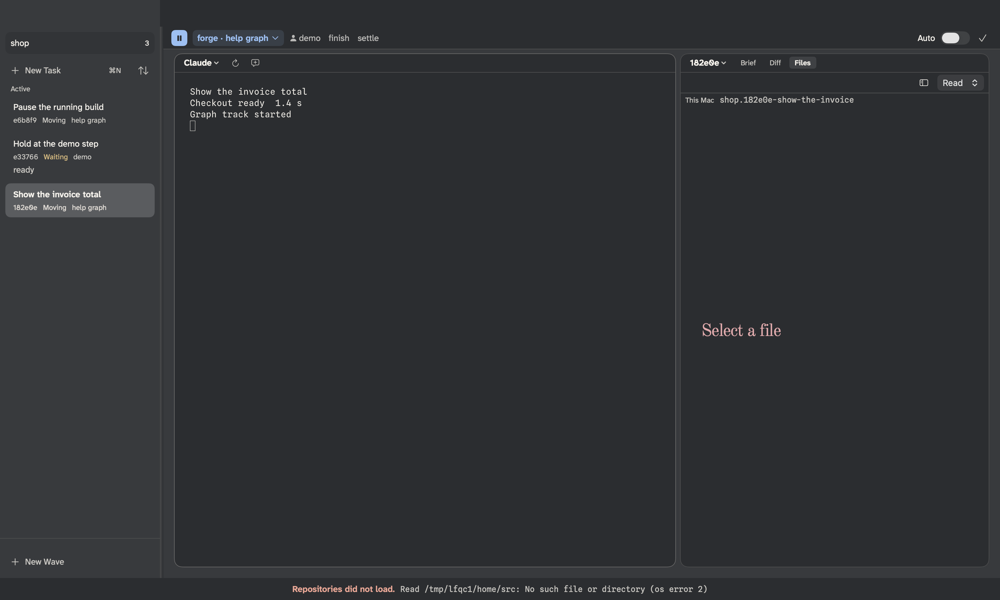 |
| ⏸ on a running step | The chip read Pausing… on the click, then Rust's Pausing: help graph with a dimmed ▶. Status said “Pausing at forge (help graph is finishing).” The row moved to Paused in lf task list. When the command exited, the bar read Paused: help graph with a filled amber ▶, and status said “Paused in forge at help graph. `lf task unpause --run` resumes it.”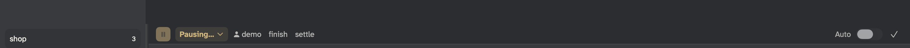 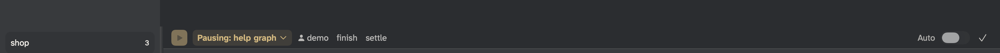 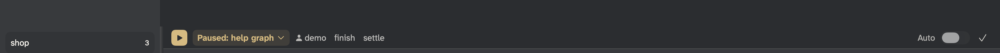 |
| ▶ at a resumable pause | Unpausing…, then forge · help graph with ⏸ again. A new worker started in the same checkout, and the row went back to Active.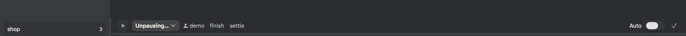 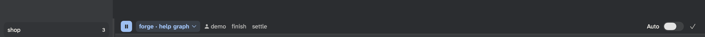 |
| Parked at a human step | forge [demo · next: finish ⌄] finish settle with an unfilled ▶; the sidebar showed Waiting.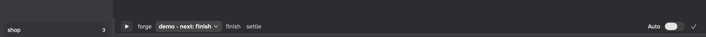 |
Step button settle | Starting… in the chip, then settle · help graph with ⏸ and the earlier steps dimmed. Status said “settle is running help graph.”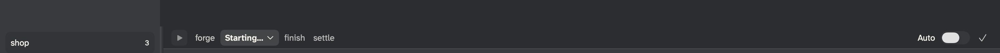 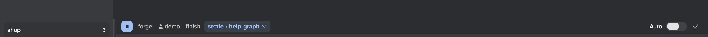 |
| Narrow fold | At 1000 pt the full track shows. At 700 pt it folds to ⏸ + chip. At 560 pt the chip truncates (settle · help g…) while Auto and ✓ stay in place.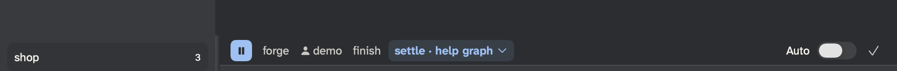 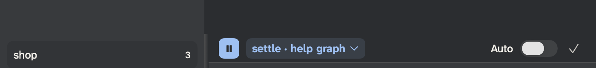 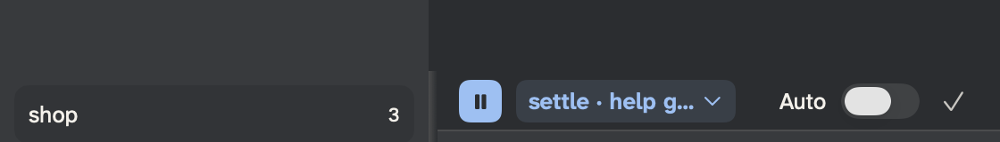 |
| Auto on, then off | On: the switch, ⏸ and chip turned green in the click, and the row moved to Shipping at once. Off: the row stayed in Shipping until the Machine's reading, then returned to Active a few seconds later (the designed behavior). The CLI agreed at each point. 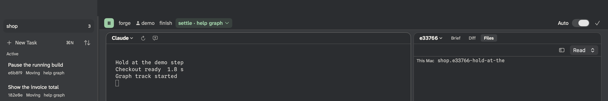 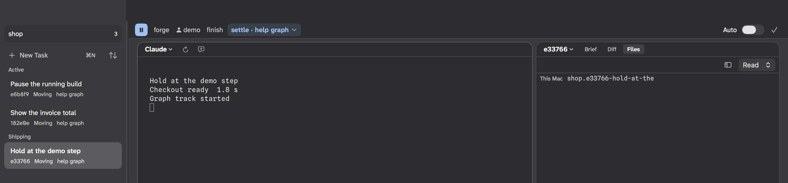 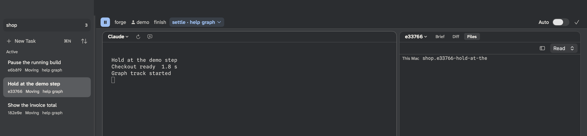 |
| ✓ Complete and Undo | The row left the list and the window moved to the next Task. The Notice read e33766 completed Undo. Clicking Undo within a second sent task.reopen one second after task.complete (server log), and the Task was back at started with its Graph untouched. After the six-second lifetime the Notice is gone; lf task reopen did the same job from the CLI.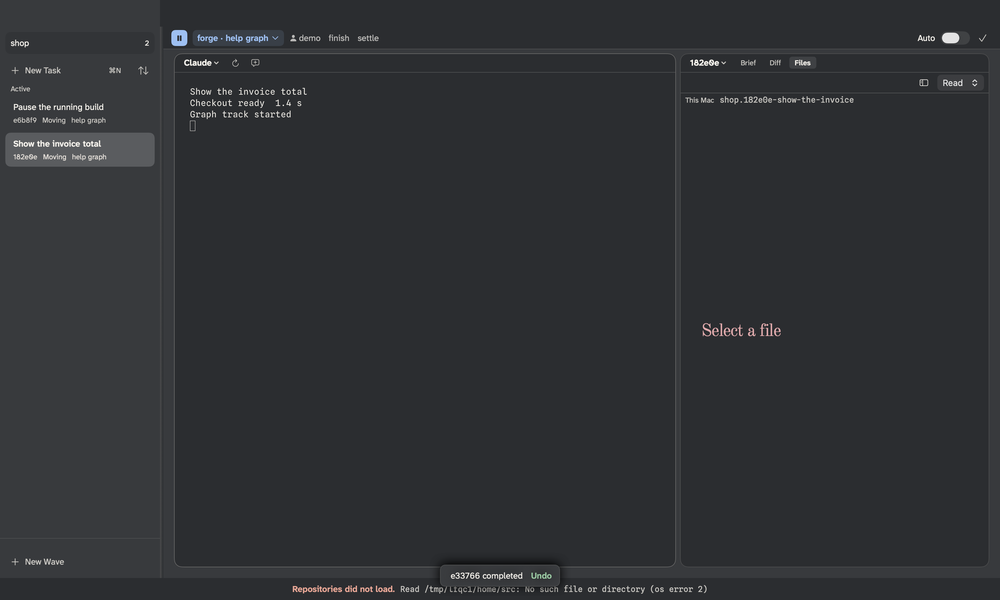 |
| Paused group in the sidebar | Pausing from the bar put the row under a Paused heading below Active, with the label “Paused · help graph”. The Task stayed in the Working list. 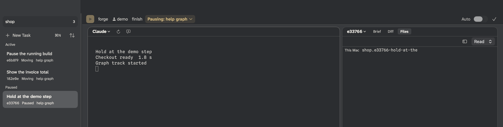 |
Nothing in the product. The run added notes to .lf/qa/task-pause.md, covering a cmd: step draining on pause and how to time Undo.
NSMenu, and the hook's timer doesn't run during menu tracking. The headless Mac and iPhone Simulator tests cover its items.lf task status (“Pausing at forge…”, “Paused in settle at help graph…”).aMergedPRKeepsTheStoppedVerifyAction covers it.TaskWorkflowControls, and the Simulator tests from the implement step cover it.cmd: step (an lf command such as land) lets it drain by design. Once it exits, the cursor stays on that step, and unpause --run runs it again (the Graph log reads “interrupted at help graph” even though the command exited 0). Running land again is harmless, but a non-idempotent cmd: step would run twice.forge · help graph), but the Paused and Pausing chips name only the inner step (Paused: help graph). In this Graph, three steps are all help graph, so the paused chip doesn't say which one. The sentence (“Paused in forge at …”) does.task_complete settles children “without moving their Graphs”). That is what lets Undo restore the Task exactly as it was, but a completed Task can keep a worker alive until the step ends. This behavior predates this branch.lf task status and the Desktop's run reason print Step 4ca06e56-… is running help graph, a raw step UUID.